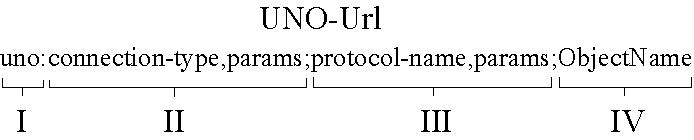

UNO Url - Specification |
|
The UNO-Url is used to address a specific UNO object in a different process. It allows services such as the com.sun.star.bridge.UnoUrlResolver to map the addressed object from a remote process into the local process by setting an interprocess connection and by using a certain kind of protocol on this connection.

The UNO-Url consists of four parts separated by colon and semicolon.
The connection-type-string and the names may only consist of ASCII letters and digits. They
are not case sensitive. The value part is an arbitrary Unicode string, which is
encoded in UTF8. Any character except letters, digits and !$&'()*+-./:?@_~
must be converted to %xx, where xx is the hexadecimal representation of the UTF8
byte. There are functions defined (see Uri class) which
support such conversions.
The connection_services document explains currently supported connection types and parameters and how the connection types can be extended.
The connection-type specifies the transport mechanism used to transfer a bytestream (e.g. tcp/ip-sockets or named pipes).
The protocol-type-string and the names may only consist of ASCII letters and digits. They
are interpreted case insensitive. The value part is an arbitrary Unicode string, which is
encoded in UTF8. Any character except letters, digits and !$&'()*+-./:?@_~
must be converted to %xx, where xx is the hexadecimal representation of the UTF8
byte. There are functions defined (see Uri class),
which support such conversions.
The arrangement of connections and bridges is explained in detail in the remotebridge document.
Valid characters are letters, digits, and !$&'()*+,-./:?=@_~. Other characters
are forbidden, such that this string can be taken as is (no conversion or escaping required).
|
Author:
Jörg Budischewski ($Date: 2004/11/27 13:16:03 $)
Copyright 2001 Sun Microsystems, Inc., 901 San Antonio Road, Palo Alto, CA 94303 USA. |